basket ball timeline
in 1891 when basketball was made not many people wanted to play but a few people got drafted and became the first few NBA players
the first game played and won was by the new york nickerbokers know today as the nicks
new york nickerbokers v.s the toronto huskies (1946)
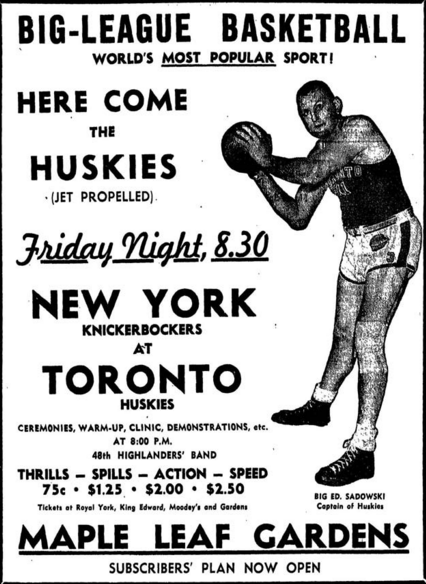
the first ever chanpionship won was by the
Philadelphia Warriors (1947)
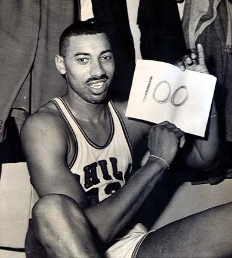
there were three black people that were drafted and they were (1950)
Earl Lloyd
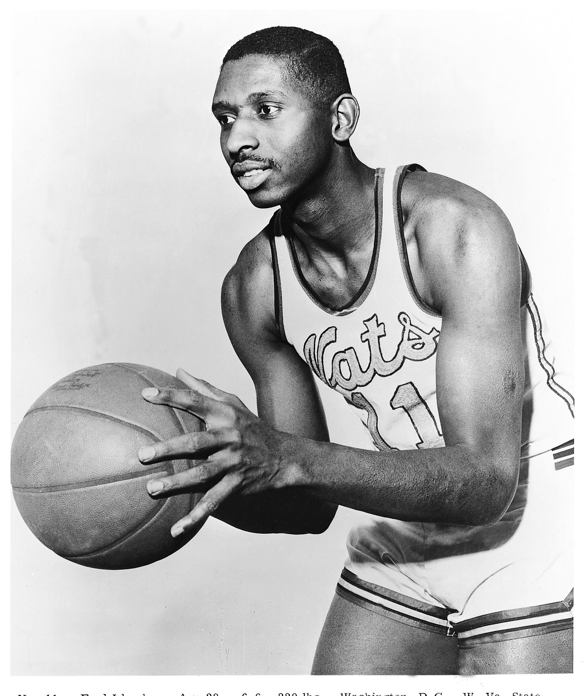
Chuck Cooper
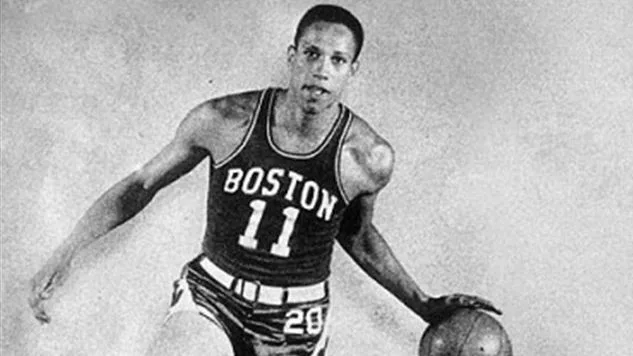
Nat Clifton
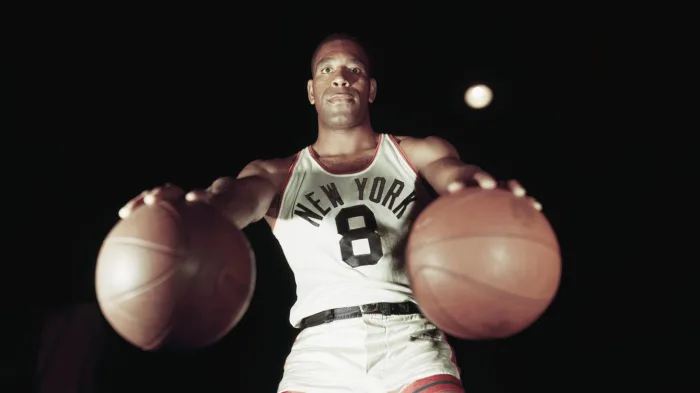
in 1984 the legend know as Michle Jordan was drafted to the nba and not long after another legend was drafted and his name was kobe
the first games that M.J and Kobe were(1984 oct) and (1996 nov)
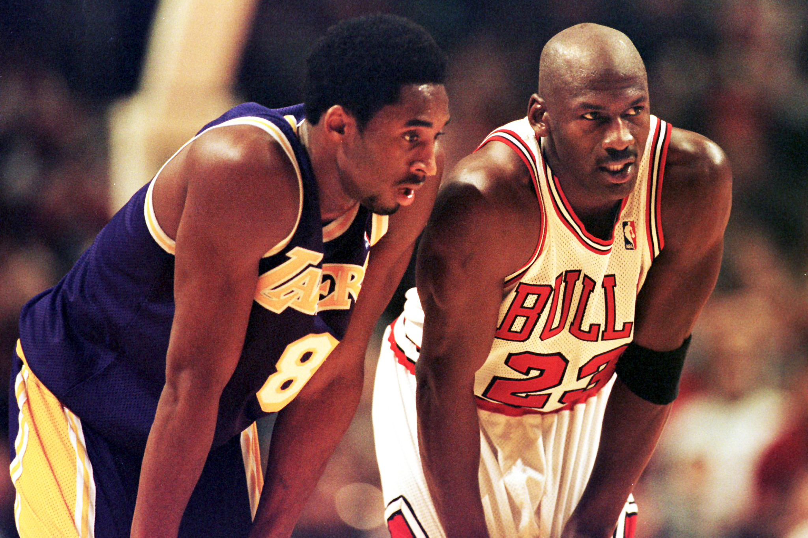
mj was a very skilled player but he was not the only one onn his team he had teammates and they won 6 championships together and those two were
Scottie Pippen
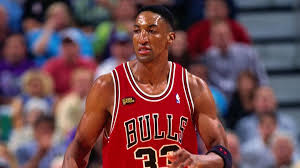
Dennis Rodmand
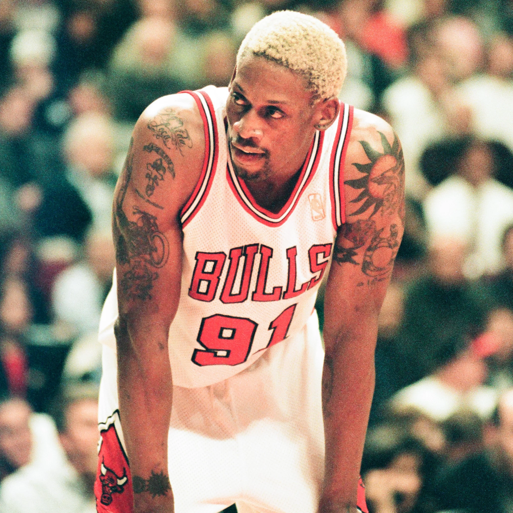
Steve Kerr
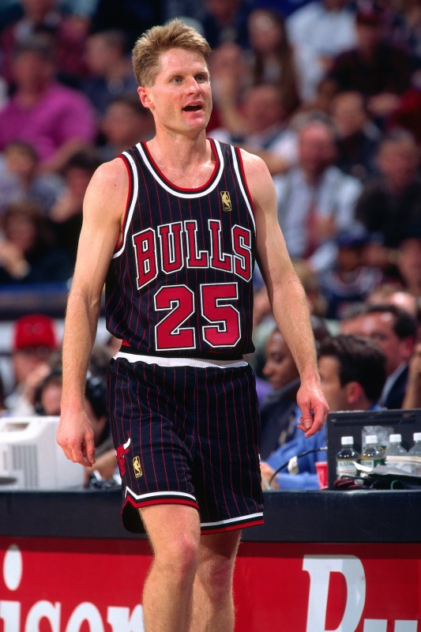
kobe was no diferent than me he needed a good teammate and they are
Shaquille O'neal

Mark Gasol
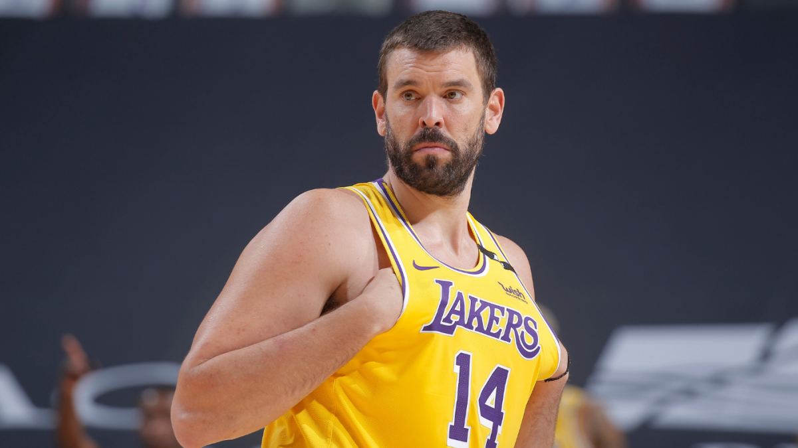
now we have the current best players lebron james and giannis antetokounmpo who go head to head when they play
lebron has played with many teams and has won many rings but giannis has just now won his first ever ring but somehow they are equils
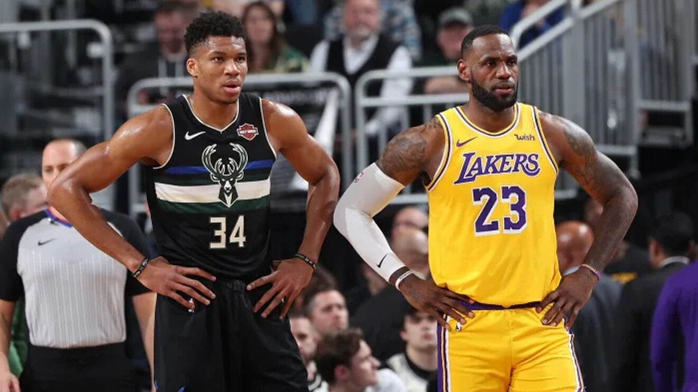
unlike MJ and Kobe these to dont have many good teammates only like one or two they are
Anthony Davis
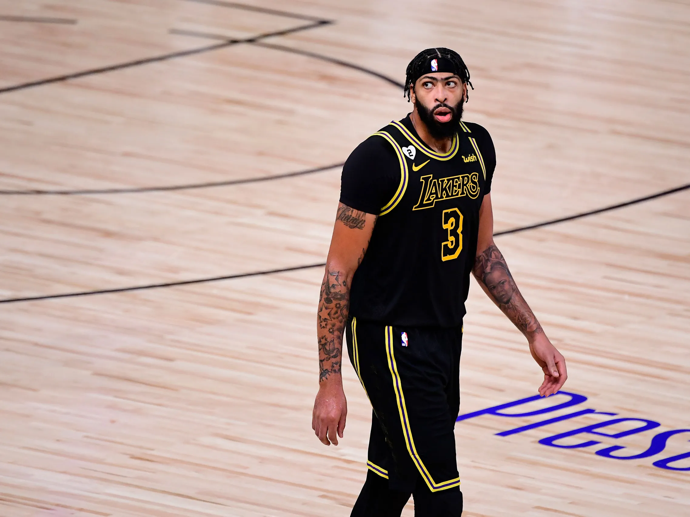
Khris Middleton
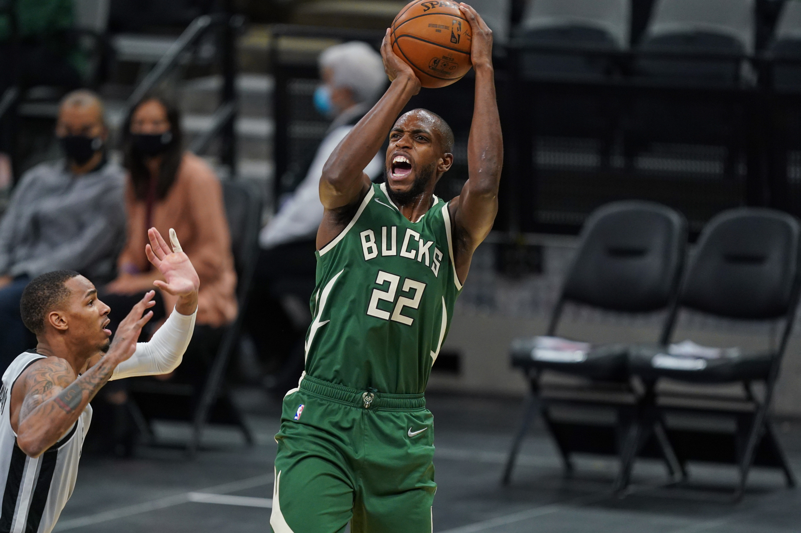